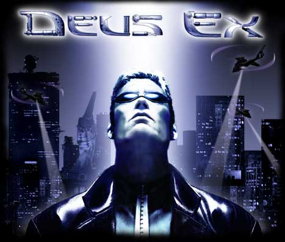

Best Techno
My Techno
“I’m still not convinced that we – all the artists, producers and DJs in techno music – do all that we can to make techno more interesting, more innovative and alluring. With the genre and all the creative freedom it allows, I think too many of us choose not to use it. Many prefer the practical way, by literally making music specifically to dance to and not making enough efforts to make music about something more important that one could also dance to. There is a difference.”
— Jeff Mills
